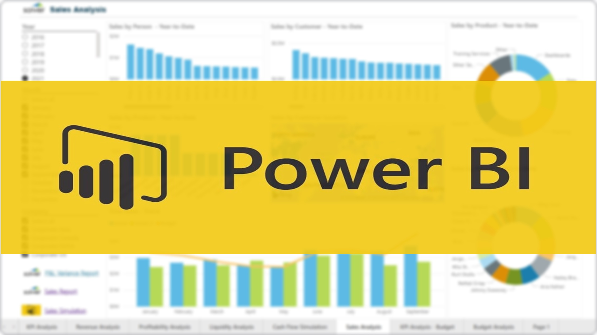

In this project we use MySQL to explore global Covid-19 data.
Skills Used: Joins, CTE's, Temp Tables, Windows Functions, Aggregate Functions, Creating Views, Converting Data Types.
Vizualization of the global Covid-19 data by using Tableau to get insights.

Data Exploration is done using Microsoft SQL Server and powerful vizualisation dashboard in Power Bi with charts & KPI’s for sales - budget relationship with
filters on year, month, costumers & products.
This model is capable of scraping data from amazon
and store in an Excel file updating itself on daily basis, and can also send automated
email as soon as the price hits the desired level.
In this study, hydraulic and hydrologic data, and DEM, has been obtained through their respective sources and preprocessing, geo-referencing, delineation of streams and areas, has been achieved through QGIS. Further, editing flow area, assigning boundary conditions, assigning parameters, stimulation, 2-D modelling and mapping, has been achieved through HEC-RAS.
Landsat 7 and Landsat 8 imagery of Indabettu watershed, for the year 2015 and 2019 are downloaded from the public domain of United States of geological survey (USGS). Images were processed for atmospheric corrections, including radiance – reflectance conversions. Raster map calculator, available at Quantum GIS is used as a tool for all type of processing. Furthermore the most popular indices normalized difference vegetation index (NDVI), and normalized difference built-up area index (NDBI) is used & image is divided from the primary data. Hence two NVDI and NDBI Images are obtained for further change detection analysis. In both the cases, pixel values infer about the presence or absence of relevant features and the values remain from –1 to +1.
This study presents a comparative analysis of morphometric parameters for two watersheds of Nethravathi river flowing in Karnataka. Delineated watersheds from toposheet are subjected to their physical characterization, using parameters viz; stream order, stream length, bifurcation ratio, drainage density, stream frequency, form factor, circulatory ratio, etc.
Impact of developmental projects on environment has been studied, comapred & insighted with the help of case studies, specifically two power projects
and a river diversion project rooted in-and-around the Western Ghats have been taken into consideration. Power plant projects
exert multi-facet impact on the ecology. In case of thermal power project it directly influence the environment through effluents,
whereas small hydro power project may stimulate the scarcity of environmental flow to the downstream uses in addition to the
existing inundation problem. The environmental flow allocation is still the bottle neck for one of the hot concerns of Dakshina
Kannada district being the Yettinahole project. Care must be taken to implement economically viable developmental projects
with high dependability which may run for a longer been.
The Rain Gauge being one of the major
parameters among the climatic factors, is been
involved in measuring the timely precipitation
values ever since from the age of Kautilya. The
basic thought of expressing the rainfall is in
converting the collected rainfall volume to its
equivalent collector depth. This makes every
Rain Gauge, from simple Symon’s to telemetric
type of gauges, to fetch the rainfall in terms of
depth values. The Symon’s Rain Gauge is a non-recording type of Rain Gauge requires once help
to take and record the data. Rainfall data
pertaining to certain depths can be easily
measured and the same skill can be educated for
community as well. As skill India is the call of
the day, this system of community-based Rain
Gauges proposed makes the local climate
prediction, if adopted in future, more rigorous
and accurate.